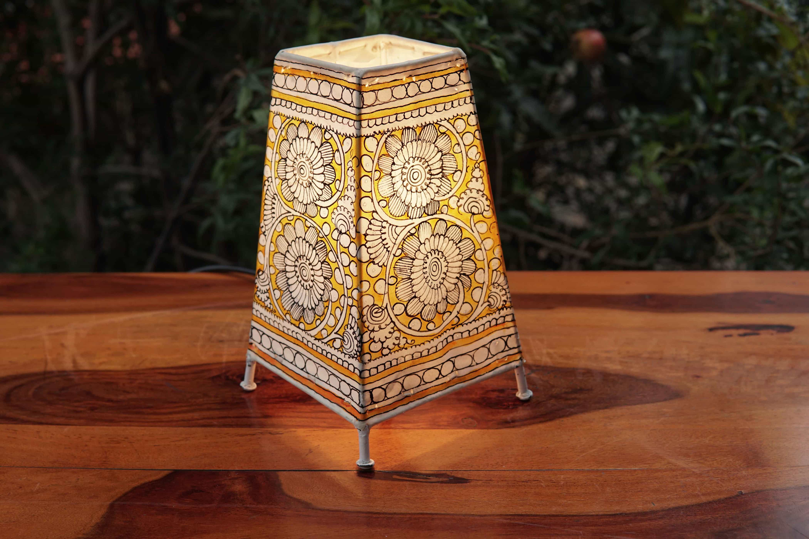
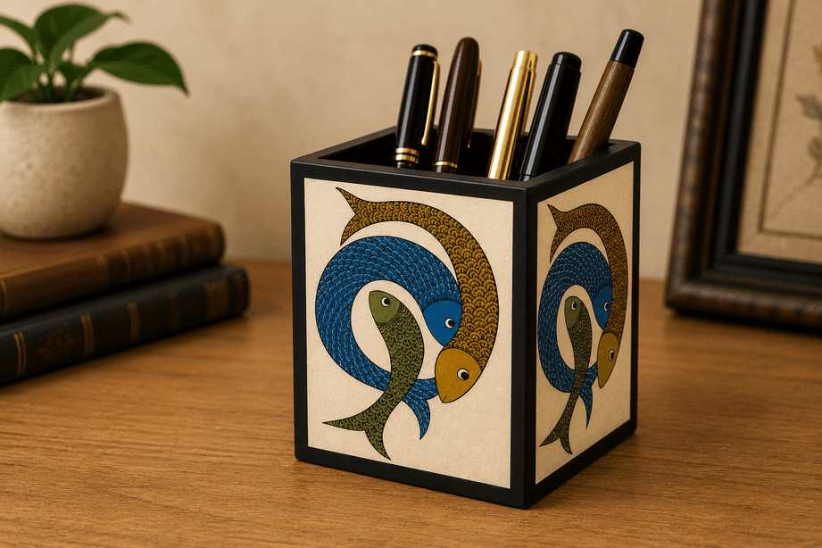
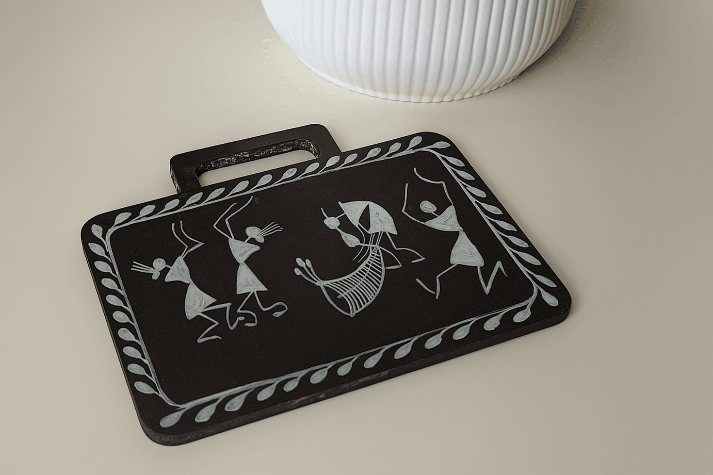
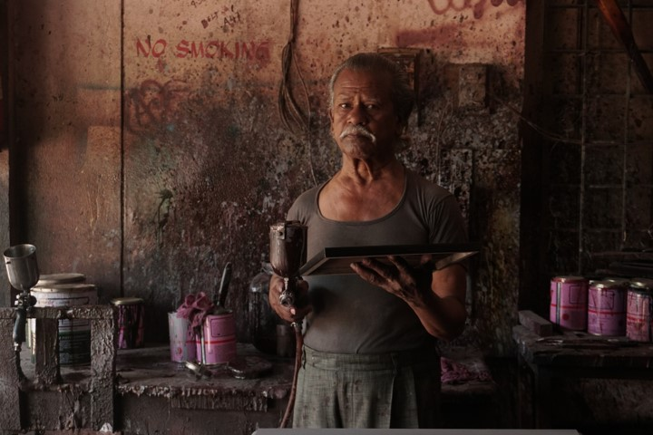
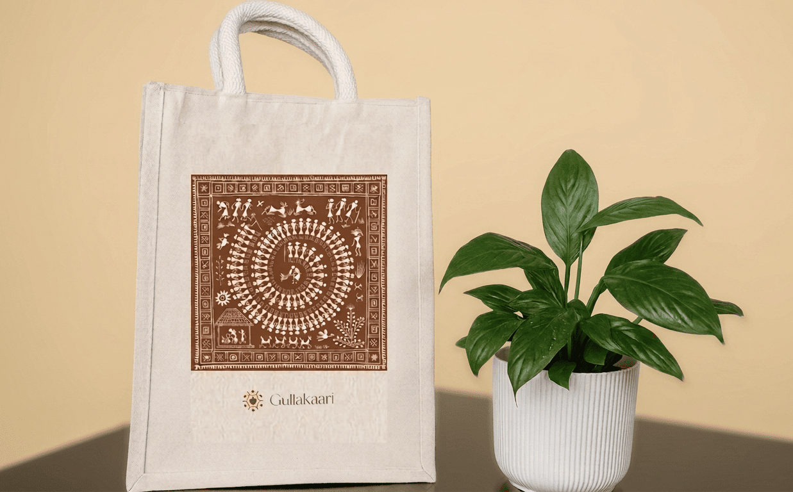
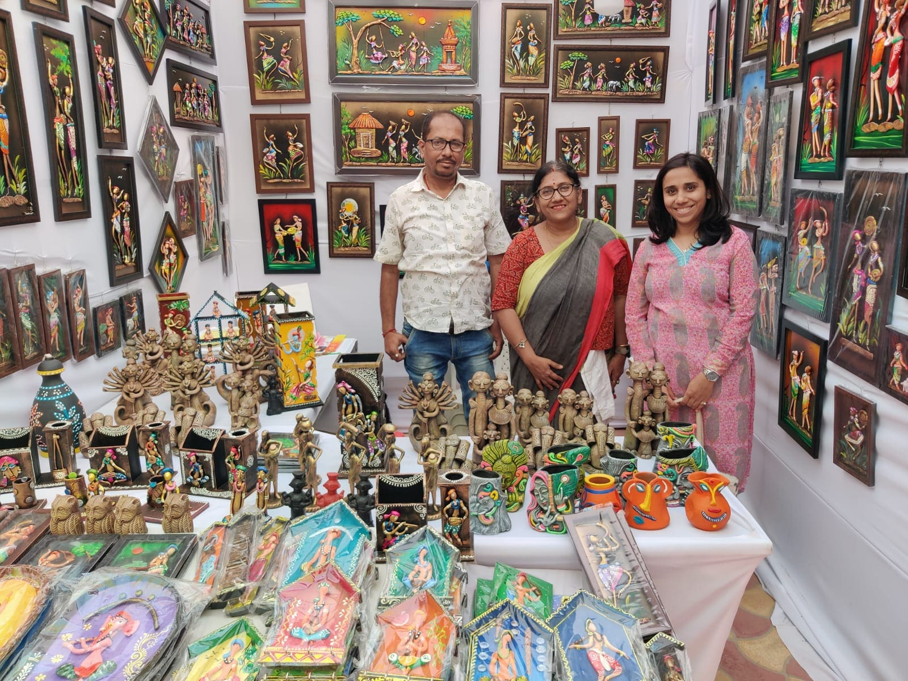

From the leather puppets of Andhra Pradesh to the embroidery of Tamil Nadu's Toda tribe — 13 art forms, 9 states, one mission.

This translucent leather painting technique hails from Andhra Pradesh and is employed in crafting puppets for the renowned shadow-puppet theatre, 'Tholu Bommalata' — meaning "the dance of leather dolls." Goatskin is the primary raw material, with vibrant colors derived from natural vegetable dyes. Intricate patterns are adorned with small holes using a chisel called "pogaru." Artisans draw inspiration from the Ramayana and Mahabharata, creating lampshades, puppets, and paintings.

'Gond' derives from the Dravidian word 'Kond,' meaning 'green mountain.' This folk art of the Gond tribal community of central India spans nearly 1,400 years and is practiced primarily in Madhya Pradesh, with presence in Maharashtra, Chhattisgarh, Andhra Pradesh, and Odisha. It is characterized by intricate patterns, a harmonious palette of colors, mystery, and a touch of humour reflecting contemporary sensibilities.

One of India's most recognized tribal art forms, Warli uses geometric shapes — circles, triangles, and squares — to depict scenes of everyday life: harvests, hunts, dances, and rituals. White pigment made from rice paste is painted on earthy red backgrounds. Originating from the Warli tribe of Maharashtra and Gujarat, it is one of the oldest traditions of India and is now a powerful symbol of tribal identity and resilience.
Rooted in the traditions of Tamil Nadu's Toda tribe, characterized by elegant geometric motifs using the "herringbone stitch" or "Pukhoor" technique in red, black, and white. Holds deep cultural and spiritual significance in traditional rituals.
An age-old craft using natural fibres like jute, reed, and grass to fashion eco-friendly mats and coverings. Renowned for cooling properties, cultural significance, and intricate hand-woven patterns passed down through generations.
Skilled artisans sculpt and craft clay into figurines, pottery, and architectural embellishments. Distinguished by its vibrant red hue through high-temperature baking, blending indigenous, Islamic, and European artistic styles.
An ancient art form from Cheriyal village in Telangana dating to the 15th century, originally using scrolls to narrate tales from the Ramayana and Mahabharata. Gullakaari conducts CSR workshops to empower rural artisans.
Introduced to Kashmir in the 15th century and popularized by Mughal Emperors, this highly stylized craft now incorporates genuine gold and silver paint with intricate embellishments and distinctive Persian floral and bird motifs.
Traditional cloth-based scroll painting narrating mythological tales through intricate detail, vivid colors, and creative motifs. One of the oldest art forms of India, practiced primarily in Odisha and West Bengal.

"Working with Gullakaari has truly opened new doors for me. Before, we had to rely on middlemen who underpaid us — now our work reaches corporations and art lovers from across the country."
— Hakeem, Nirmal Artisan

"Gullakaari's skill training helped me create products that sell. For the first time, I feel my craft has value beyond our village."
— Women Artisan, Maharashtra

"The pride that comes with recognition — when someone from another city values what I've made with my hands — that cannot be described in words."
— Terracotta Artisan, West Bengal
Gullakaari conducts customized workshops for corporates under CSR mandates — bringing artisans and their craft directly into corporate spaces to foster cultural empathy and support livelihoods.
From Cheriyal painting sessions to Gond art workshops, our programs create meaningful engagement for employees while generating direct income for artisans. Meaningful impact your employees will remember.
Partner With Us →